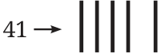
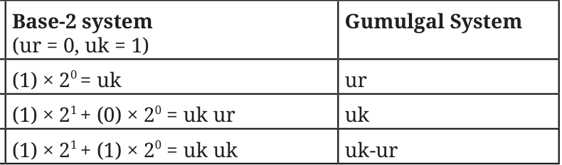
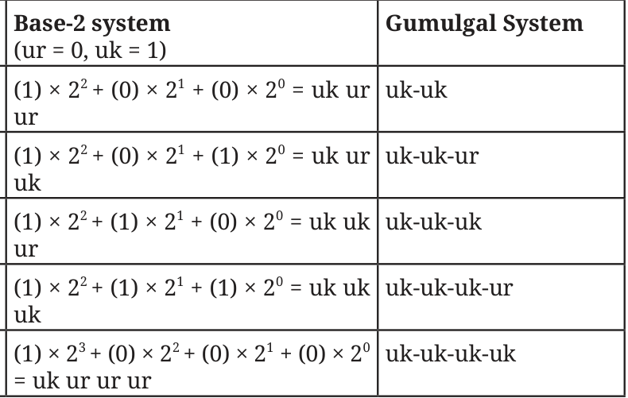

- 1.Why do you think the Chinese alternated between the Zong and Heng
symbols? If only the Zong symbols were to be used, how would 41 be represented? Could this numeral be interpreted in any other way if there is no significant space between two successive positions? Ans. The Chinese alternated between the Zong (vertical) and Hong (Horizontal) rod numerals to get all the powers of 10 required to get all numbers, and to distinguish between adjacent places.

Yes, it might be interpreted as 23, 32 or 122. Think of more.
- 2.Form a base-2 place value system using ‘ukasar’ and ‘urapon’ as the
digits. Compare this system with that of the Gumulgal’s.
Ans. In Base-2, we need symbols for numbers 0 and 1. Let us assign 0-urapon and 1-ukasar. Now compare this system with Gumulgal's.
Number

Number

In Base-2 system, and the Gumulgal system there are only two landmark numbers.
- 3.Where in your daily lives, and in which professions, do the Hindu
numerals, and 0, play an important role? How might our lives have been different if our number system and 0 hadn’t been invented or conceived of? Ans. Hindu numerals and ‘0’ are the foundations of modern life. They are used in commerce, calculations and communications. In the absence of the numerals and 0, the development of technology would have been difficult. Think of more.
- 4.The ancient Indians likely used base 10 for the Hindu number system
because humans have 10 fingers, and so we can use our fingers to count. But what if we had only 8 fingers? How would we be writing numbers then? What would the Hindu numerals look like if we were using base-8 instead? Base-5? Try writing the base-10 Hindu numeral 25 as base-8 and base-5 Hindu numerals, respectively. Can you write it in base-2? Ans. If we had 8 fingers, we would likely have a base-8 number system. In base-8, we may write number n as \(- n = (a_{k})8^{k}+ (a_{k} - 1) 8^{k} - 1 +\) … \(+ (a_{1})8^{1} + (a_{0}) 8^{0}\), where \(a_{k} \ne 0\) and \(0 \le a_{i} \le 7\) for all \(i = 0\), 1, 2, … , k. Then base-8 representation of n is \(a_{k}a_{k} - 1\) … a_{1}a_{0}. Similarly, we can do the base-5 representation of any number n by replacing power of 8’s by power of 5’s.
In base-8, \(25 = (3) \times 8 + (1) \times 8\)
Base-8 representation of 25 is 31.
In base-5, \(25 = (1) \times 5 + (0) \times 5 + (0) \times 5\)
Base-5 representation of 25 is 100. Try yourself for base-2.